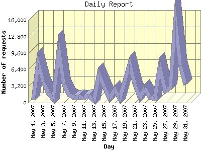

Report generated by Analog 6.0 and Report Magic 2.21
|
Web Server Statistics for "Harish Narayanan (hnarayan) - May 2007" Report generated by Analog 6.0 and Report Magic 2.21 |
The Daily Report identifies the activity for each day within the reporting period. Remember that one page hit can result in several server requests as the images for each page are loaded.

| Day | Number of requests | Number of bytes transferred | Percentage of the bytes | Percentage of the requests | |
|---|---|---|---|---|---|
| 1. | May 1, 2007 | 617 | 51.870 MB | 3.26% | 0.58% |
| 2. | May 2, 2007 | 7,710 | 40.454 MB | 2.54% | 7.22% |
| 3. | May 3, 2007 | 3,987 | 33.417 MB | 2.10% | 3.73% |
| 4. | May 4, 2007 | 1,875 | 81.709 MB | 5.14% | 1.76% |
| 5. | May 5, 2007 | 675 | 60.769 MB | 3.82% | 0.63% |
| 6. | May 6, 2007 | 10,214 | 88.334 MB | 5.56% | 9.57% |
| 7. | May 7, 2007 | 3,520 | 33.446 MB | 2.10% | 3.30% |
| 8. | May 8, 2007 | 1,585 | 38.490 MB | 2.42% | 1.49% |
| 9. | May 9, 2007 | 986 | 26.932 MB | 1.70% | 0.92% |
| 10. | May 10, 2007 | 1,063 | 48.258 MB | 3.04% | 1.00% |
| 11. | May 11, 2007 | 933 | 77.400 MB | 4.87% | 0.87% |
| 12. | May 12, 2007 | 1,253 | 48.458 MB | 3.05% | 1.17% |
| 13. | May 13, 2007 | 422 | 12.921 MB | 0.81% | 0.40% |
| 14. | May 14, 2007 | 5,421 | 180.337 MB | 11.35% | 5.08% |
| 15. | May 15, 2007 | 3,076 | 31.684 MB | 1.99% | 2.88% |
| 16. | May 16, 2007 | 825 | 37.262 MB | 2.34% | 0.77% |
| 17. | May 17, 2007 | 2,489 | 42.119 MB | 2.65% | 2.33% |
| 18. | May 18, 2007 | 793 | 30.989 MB | 1.95% | 0.74% |
| 19. | May 19, 2007 | 4,055 | 29.450 MB | 1.85% | 3.80% |
| 20. | May 20, 2007 | 7,555 | 49.283 MB | 3.10% | 7.08% |
| 21. | May 21, 2007 | 3,628 | 38.244 MB | 2.41% | 3.40% |
| 22. | May 22, 2007 | 958 | 26.326 MB | 1.66% | 0.90% |
| 23. | May 23, 2007 | 2,751 | 38.724 MB | 2.44% | 2.58% |
| 24. | May 24, 2007 | 1,071 | 39.825 MB | 2.51% | 1.00% |
| 25. | May 25, 2007 | 811 | 55.738 MB | 3.51% | 0.76% |
| 26. | May 26, 2007 | 6,851 | 88.940 MB | 5.60% | 6.42% |
| 27. | May 27, 2007 | 2,210 | 39.299 MB | 2.47% | 2.07% |
| 28. | May 28, 2007 | 2,945 | 32.936 MB | 2.07% | 2.76% |
| 29. | May 29, 2007 | 15,760 | 57.253 MB | 3.60% | 14.76% |
| 30. | May 30, 2007 | 7,155 | 74.905 MB | 4.71% | 6.70% |
| 31. | May 31, 2007 | 3,558 | 53.605 MB | 3.37% | 3.33% |
Most active day May 29, 2007 : 1,636 pages sent. 15,760 requests handled. 60,034,608.00 served.
Daily average: 3,443 requests handled. 51.270 MB served.
This report was generated on June 9, 2007 22:56.
Report time frame May 1, 2007 00:01 to May 31, 2007 23:59.
| Web statistics report produced by: | |
 Analog 6.0 Analog 6.0 |  Report Magic 2.21 Report Magic 2.21 |